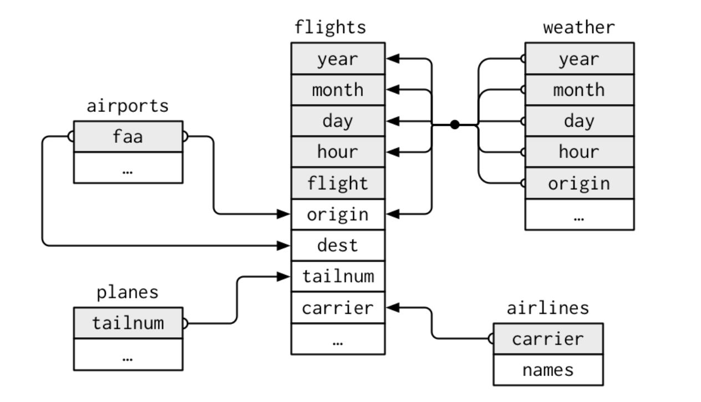
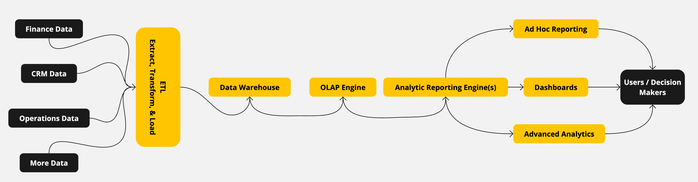
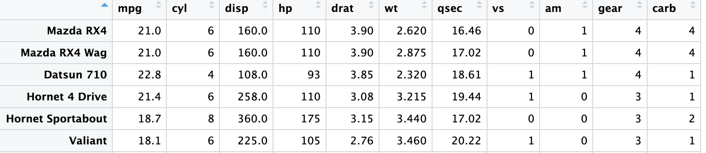
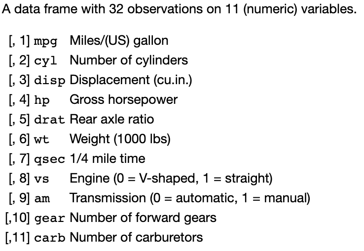

MGMT 17300: Data Mining Lab
Data Organization to Drive Decisions
Overview
- Structured Data
- Unstructured Data
- Databases
- Relational Databases
- Non Relational Databases
- Meta Data and Dictionary (code book)
What is Data?
What is Data?
- Data refers to raw, unprocessed facts, figures, and symbols that represent information about the world around us. Data can take many forms, such as numbers, text, images, audio, and video, and it can be quantitative (numerical) or qualitative (categorical).
Types of Data
Types of Data
Structured Data: Data that is organized in a defined format, such as rows and columns in a database (e.g., an Excel spreadsheet).
Unstructured Data: Data that does not have a predefined structure, such as text, emails, social media posts, videos, and images.
Semi-Structured Data: Data that does not conform to a strict structure but contains tags or markers to separate elements (e.g., XML or JSON files).
Structured Business Data
Business data refers to the information gathered by an organization, such as customer data, financial data, sales data, employee data, and more. Business data can come from a wide variety of sources - from customers’ purchase transactions and social media activities to market research and financial reports.
- Because structured data is typically organized in a specific format that can be easily searched and analyzed, most business analytics are designed and applied to structured data. This course will focus solely on using and analyzing structured data.
Introduction to Databases
Introduction to Databases
- A Database is a structured collection of data, typically managed by a Database Management System (DBMS) to efficiently store, retrieve, and manage data for various applications.
The Relational Model: 1970s
Edgar F. Codd: Proposed the relational model in 1970, which became the foundation for modern databases.
RDBMS: A Relational Database Management System (RDBMS) is used to maintain relational databases.
SQL: Structured Query Language (SQL) was developed to interact (query and update) with relational databases.
Adoption: The relational model became dominant in the 1980s, with systems like Oracle, IBM DB2, and Microsoft SQL Server emerging. Nowadays, open-source systems like MySQL are used by big companies to handle their relational data.
The Rise of NoSQL: 2000s
Limitations of RDBMS: Traditional relational databases struggled with the scale and complexity of modern web applications.
- Example: A social media platform with millions of users posting, commenting, and liking content simultaneously.
- Limitation: RDBMS typically scale vertically (adding more power to a single server), which becomes increasingly expensive and challenging as the database grows. In contrast, NoSQL databases like Cassandra or MongoDB are designed to scale horizontally (adding more servers), making them better suited for handling such large-scale data across distributed systems.
NoSQL Databases: Emerged to address these challenges. They offer flexibility, scalability, and performance improvements. They are designed to scale horizontally (adding more servers), making them better suited for handling such large-scale data across distributed systems.
Types: Document (e.g., MongoDB), Key-Value (e.g., Redis), Column-Family (e.g., Cassandra), and Graph (e.g., Neo4j).
Use Cases: Ideal for big data, handling unstructured data, real-time web applications, and distributed systems.
Modern Database Trends
NewSQL: Combines the scalability of NoSQL with the Atomicity, Consistency, Isolation, and Durability (ACID) guarantees of traditional relational databases (e.g., Google Spanner).
Cloud Databases: The adoption of cloud computing has led to the rise of managed database services (e.g., Amazon RDS, Google Cloud SQL).
Data Lakes: A storage repository that holds vast amounts of raw data in its native format (e.g., AWS S3, Azure Data Lake).
Relational Database
Relational Database

A relational database links data tables through pre-defined and shared fields in various data tables, establishing relationships.
This permits more efficient organization and utilization of data across multiple tables.
Moreover, a relational database serves as a potent tool for handling extensive data volumes and managing complex data structures.
Relational Database
Query 1: Flights from a Specific Carrier
SELECT flights.year, flights.month, flights.day,
flights.flight, airlines.names AS airline_name
FROM flights
JOIN airlines ON flights.carrier = airlines.carrier
WHERE airlines.names = 'American Airlines';
-- Replace 'American Airlines' with the desired carrier nameRelational Database
Query 2: Weather Conditions at the Time of a Specific Flight
SELECT flights.flight, flights.origin,
flights.dest, weather.*
FROM flights
JOIN weather
ON flights.year = weather.year AND
flights.month = weather.month AND
flights.day = weather.day AND
flights.hour = weather.hour AND
flights.origin = weather.origin
WHERE flights.flight = 'AA123';
-- Replace 'AA123' with the desired flight numberRelational Database
Query 3: Count of Flights Per Airport
SELECT airports.faa,
COUNT(flights.flight) AS flight_count
FROM flights
JOIN airports ON flights.origin = airports.faa
GROUP BY airports.faa
ORDER BY flight_count DESC;Data Warehouse
A Data Warehouse is a large and comprehensive storage system that consolidates data from various sources, including relational databases, into a centralized repository, much like a university campus that encompasses buildings of various functions.
- The primary purpose of a data warehouse is to facilitate data storage, reporting, and analysis for business intelligence and decision-making purposes.
Information Management System
Information Management System

The primary goal of an Information Management System (IMS) is to ensure that accurate, timely, and relevant information is generated and available to the right people at the right time, enabling efficient and informed decision-making processes.
Information Management System
- Key Components: Data sources, ETL (Extract, Transform, Load), Data Warehouse, OLAP Engine, and Analytic Reporting.
Data Sources
Finance Data: Information related to financial transactions, budgeting, and accounting.
CRM Data: Customer Relationship Management data, including customer interactions, sales, and service records.
Operations Data: Data concerning the day-to-day operations of a business, such as supply chain, inventory, and production.
More Data: Any additional data sources that contribute to the organization’s information ecosystem.
ETL Process (Extract, Transform, Load)
Extract: Data is collected from various sources, such as finance systems, CRM systems, and operations databases.
Transform: The extracted data is cleaned, aggregated, and formatted to fit the data warehouse schema.
Load: The transformed data is loaded into the Data Warehouse, where it is stored and made available for analysis.
Data Warehouse and OLAP Engine
Data Warehouse: A centralized repository that stores integrated data from multiple sources, optimized for query and analysis.
OLAP Engine (Online Analytical Processing): Tools that allow for complex analytical queries and multi-dimensional data analysis.
- Example: Analyzing sales trends over time, across different regions, or by product categories.
Analytic Reporting and Advanced Analytics
Analytic Reporting Engine: Produces reports and dashboards for users to visualize and understand the data.
- Ad Hoc Reporting: Enables users to create custom reports on-demand.
- Dashboards: Provides a visual summary of key performance indicators (KPIs) and metrics.
Advanced Analytics: Includes data mining, predictive modeling, and other sophisticated analytical techniques to uncover hidden patterns and insights.
Users and Decision-Making
Users: Business analysts, managers, and executives who use the IMS to make informed decisions.
Outcome: The IMS enables data-driven decision-making, improving efficiency, reducing risks, and enhancing overall business performance.
Meta Data and Data Dictionary
Meta Data and Data Dictionary
Metadata is essentially information about structured data. It can include details like the date and time a database or file was created, who created it, and what types of information it contains.
A data dictionary is a more specific type of metadata that describes the structure, content, and format of a dataset. It’s like a guidebook and a codebook that provides a comprehensive list of all the variables or columns in a dataset, along with their definitions, data types, and other attributes.
- Without it, you might get lost in a sea of information and struggle to make sense of it all.
Data Dictionary Example
mtcars

The mtcars data file provides information on various features of different brands of cars, including their engine size, horsepower, and fuel efficiency. The dataset is structured as a table, where each row represents a different car, and each column represents a different variable or feature of the cars.
Data Dictionary for mtcars

?mtcars
Learning Path
Learning Path
There are plenty of college courses to choose (course titles may vary by schools):
Database Management Systems: This course focuses on the design, implementation, and management of databases, teaching students how to organize and manage data effectively.
Information Security and Privacy: This course covers the principles and practices of securing information and ensuring data privacy, preparing students to handle data security challenges.
Data Governance and Management: This course explores the governance and management of data assets, including data quality, data integration, and data lifecycle management.
Information Systems Analysis and Design: This course teaches students how to analyze business requirements and design information systems to meet organizational needs.
Summary
Summary
Structured Data: Highly organized and formatted data that is easily searchable (e.g., tables with rows and columns).
Databases: Used to store and manage structured data efficiently.
- Types: Include relational databases (RDBMS) like MySQL and NoSQL databases like MongoDB.
- Functionality: Provides tools for querying, updating, and managing large datasets.
Relational Databases: Organizes data into tables that can be linked by shared keys.
- Benefits: Ensures data integrity and supports complex queries and transactions.
- Key Components: Tables, primary and foreign keys, SQL for data manipulation.
Non-Relational Databases: NoSQL databases designed for unstructured data and scalability.
- Advantages: Handle large-scale data across distributed systems more effectively than traditional RDBMS.Meta Data: Information describing other data, providing context and making it easier to understand.
Data Dictionary: Detailed description of dataset variables, ensuring consistent data usage.